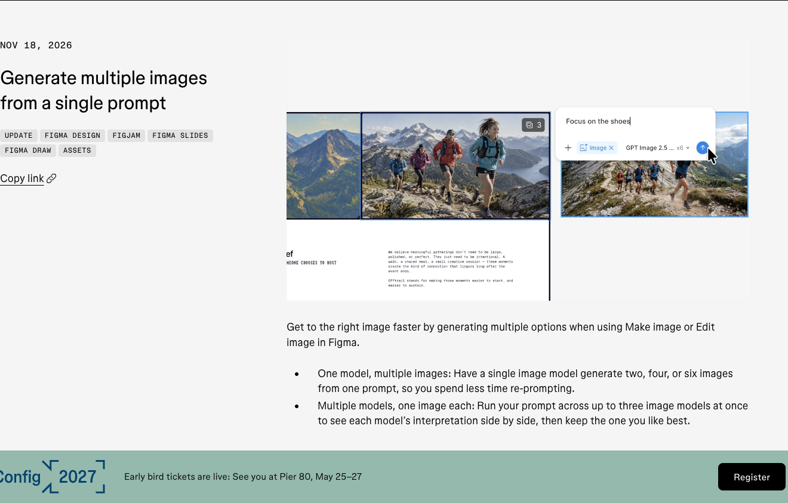
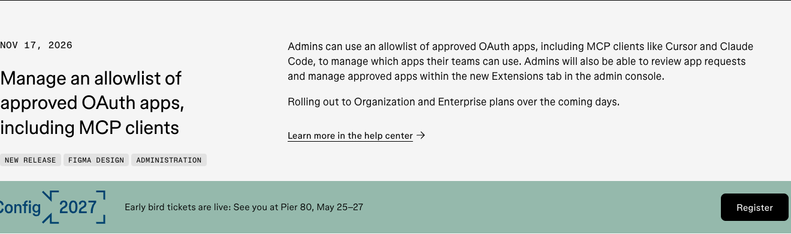
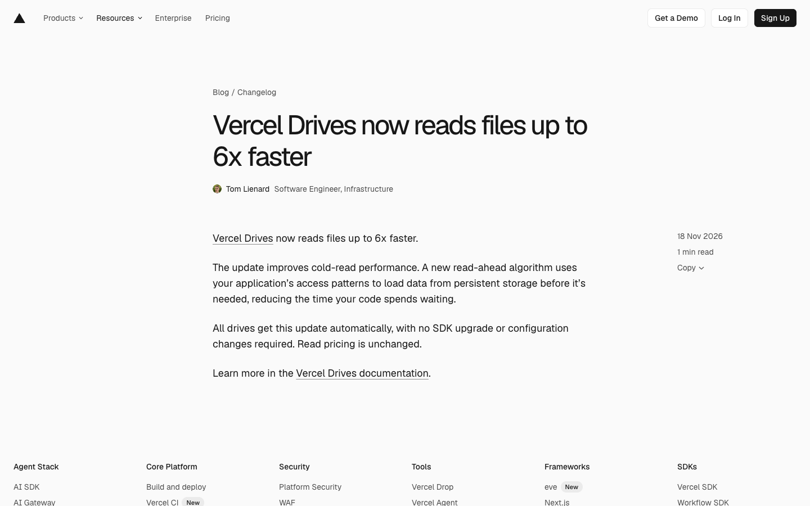
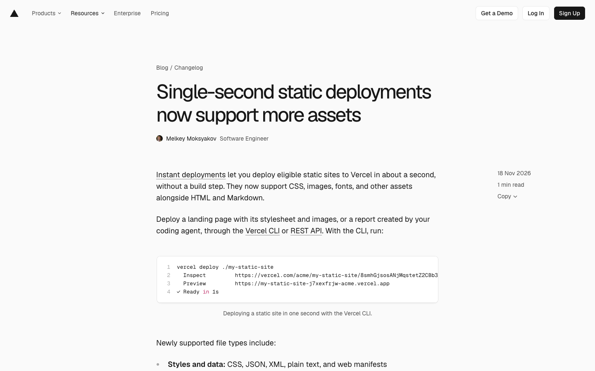
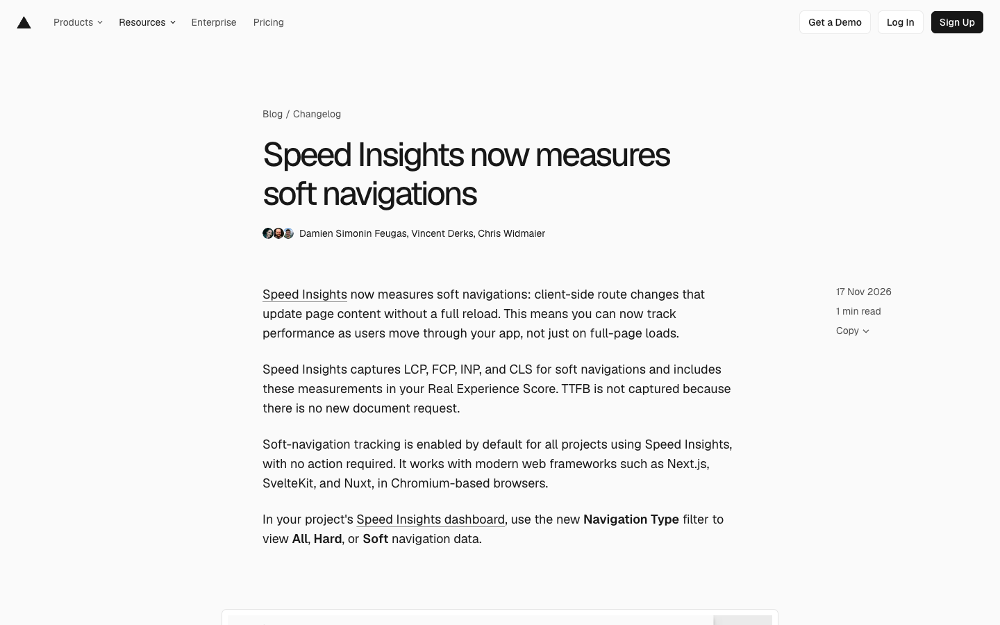
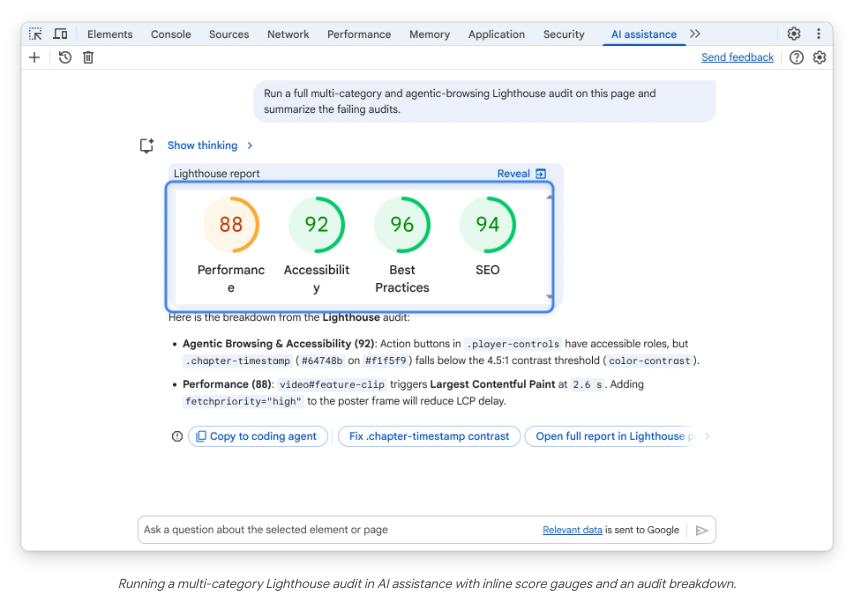
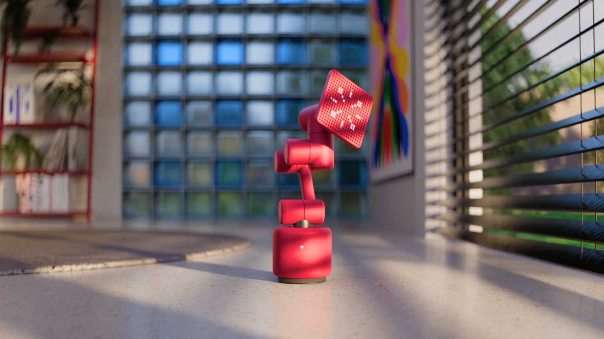

今天的主线不是“生成又快了一点”，而是比较、治理、测量和失败态开始变成默认工作流。Figma 让同一个 prompt 横向出多个候选，也把 OAuth app 与 MCP client 拉进管理员白名单；Vercel 开始测 SPA 的软导航，并把静态交付压到一秒级；Chrome 则直接暴露媒体卡顿状态给前端调试。效率真正拉开差距的地方，已经从会不会生成，转向能不能选、能不能管、能不能验。除页面与播放器状态外，今天这些产品更新都还没实测，不替官方说明扩写体验结论。

Figma 的 Make image / Edit image 现在可以让同一个模型一次生成 2、4 或 6 张图，也能让最多 3 个模型各出 1 张并排比较；范围覆盖 Design、FigJam、Slides、Draw 与 Assets。
这次更新补的是选择界面，不是模型噱头。品牌 KV、插画方向和产品 hero 图都需要横向比较才能做判断；但 release note 没写清批量生成的 AI credit 计费，没实测前别把“一次六张”当成六倍免费产能。

Organization 与 Enterprise 管理员正在分批获得 OAuth app 白名单：Cursor、Claude Code 这类 MCP client 也在范围内，团队成员可提交请求，管理员在新 Extensions 页审核和撤销。
设计文件一旦接进 agent，治理就不能只剩“谁能打开文件”。插件、MCP、OAuth token 都是新的数据出口；白名单至少让设计系统脚本和个人试验工具有了不同权限层级。

Vercel Drives 的冷数据读取最高快 6 倍：新 read-ahead 算法会根据应用访问模式从持久存储预读，再把后续读取缓存在 NVMe。所有 Drive 自动获得更新，不要求 SDK 或配置变化。
对设计平台和素材后台，这比首页跑分更实在——大文件目录、缩略图索引和批量导出最怕第一次打开慢。官方只给最高值，没有公开不同文件规模的分布；先不把 6× 写进交付承诺。

Vercel 的 instant deployment 现在不只收 HTML / Markdown，也支持 CSS、JSON、图片、字体、PDF、音视频等静态资产。符合条件的站点上限为 100 个文件、总计 25MB，通过 CLI 或 API 交付，系统自动跳过 build；含 JavaScript、框架 preset、根目录 package.json / vercel.json 或 public/ 的项目仍走原流程，所有方案均在分批开放。
这给评审页、视觉规范、动效 demo 和 agent 生成报告多了一条低摩擦交付线。边界也很干净：它是静态包快递，不是把任意前端项目都压成一秒发布。

Speed Insights 默认开始记录 SPA 客户端路由切换的 LCP、FCP、INP 与 CLS，不记录 TTFB；目前面向 Chromium 和现代框架。软导航事件会计入 Speed Insights Plus 用量，现有 Plus 团队的计费起点另行邮件通知，新开 Plus 则立即计费。
产品团队终于能看到“首屏很快，第二页很慢”这种真实体验。路由切换里的 skeleton、共享元素转场和图片解码不再躲在一次漂亮的首页分数后面；代价是性能预算也要按导航次数算。

Chrome 157 / 158 的 DevTools 更新把多类别 Lighthouse 与 agentic-browsing 审计接进 AI assistance；Elements 面板还能强制 <video> / <audio> 的 :buffering、:stalled 状态，不用先把网络掐慢。无障碍侧也补了 live announcement 跳转到调用位置、焦点对比度和控件语义。
这三件事刚好覆盖设计工程最常漏的部分：自动审计、媒体失败态、键盘与读屏路径。下一次做视频 hero，不要只验“能播”，把加载、卡住、静音、reduced motion 和无海报图一起列成组件状态。
Vimeo 原片https://vimeo.com/1245070857 · Motion Design Awardshttps://www.motiondesignawards.com/project/2754/raven-r-dancing-speaker-1

Raven R 是 Raven Tech 与 Teenage Engineering 在 2018 年合作、最终未商业发布的跳舞智能音箱原型。3D motion designer Peter Pongó 把它复活成一支非官方概念片；作品页也明确写着未获 Raven 或 Teenage Engineering 背书。
从 Stash 的五张 1920×1080 官方静帧与作者说明看，片子的好处不在把硬件做软，而在把结构变成角色语法：方形穿孔 LED 面板负责表情，刚性关节负责姿态，唱机、扫地机器人和家居光影负责尺度与情绪。镜头在独立站立、正俯视脸部、跨设备共舞和珠帘遮挡之间切换，产品叙事从“会播放音乐”改成“会表演音乐”。
Vimeo 在当前网络与 Stash Referer 下仍返回 401，今天不编造节奏和音画同步的实测结论。能立即拿走的动作是：先为智能硬件定义 4 个关键姿态、3 组 LED 表情和一个 5–8 秒循环，再决定完整片长；角色感来自结构与停顿，不是给所有零件加软弹性。
今天已覆盖 Figma 单提示词多图生成、OAuth / MCP allowlist、Vercel Drives 冷读取提速、单秒静态部署扩展、Speed Insights 软导航、Chrome DevTools 12 月更新；完整视频为《Raven R》。Stash 最新观察已登记 Raven R、Postoffice《Give the Gift of Closeness》、《Quorum》与《Something in the Air》；后三条均为昨日已覆盖，不重复写成新发现。
继续避免重复：11 月 18 日的 Copilot Evals、Adaptive code review、secret scanning、browser use、customization source controls、Spatial CSS、Standard build billing、PR-only previews、Blob TTL 与《Quorum》；以及更早的 Manta、Clash、ETC、We Love Pitching、Trizz、Swatch、Stash 180、《Gatto》、BYOK 与 Token Pass。